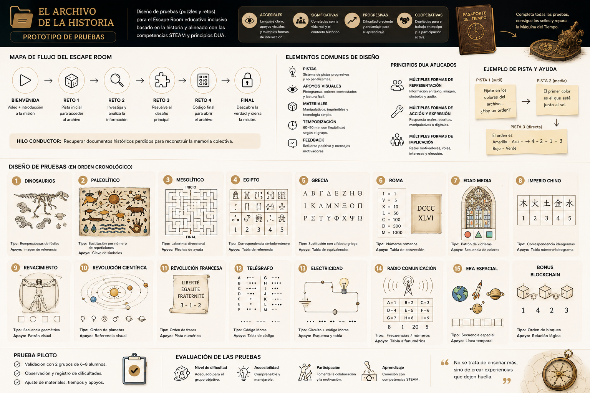
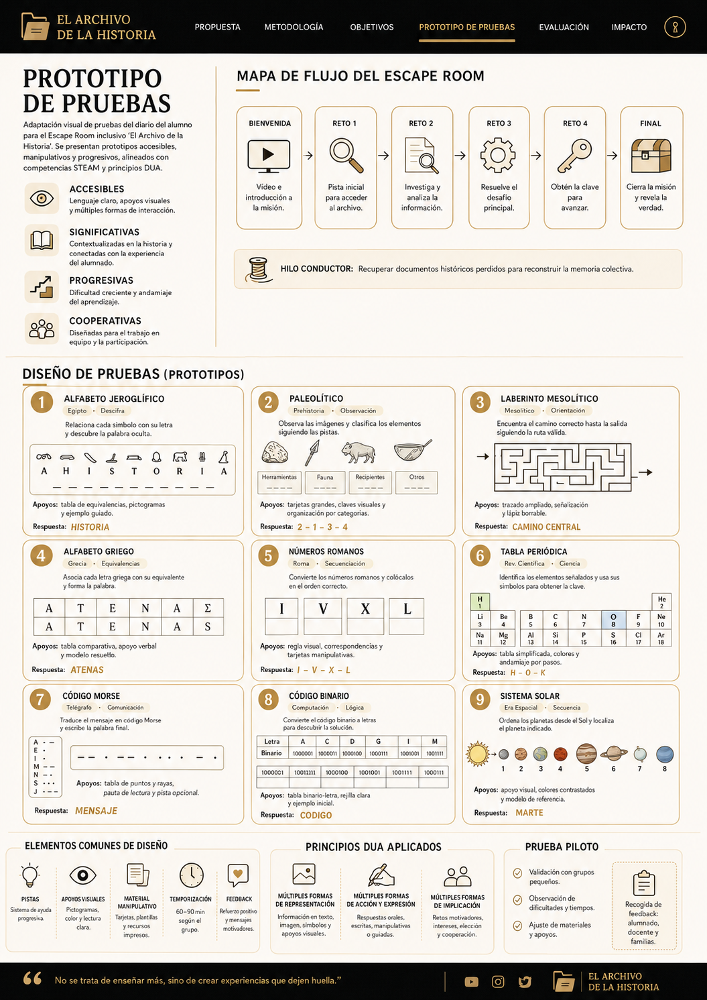
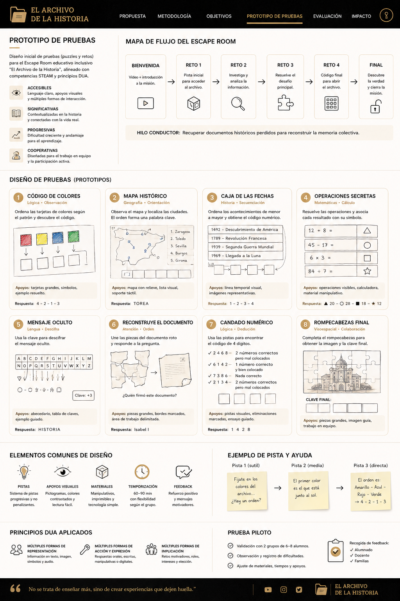
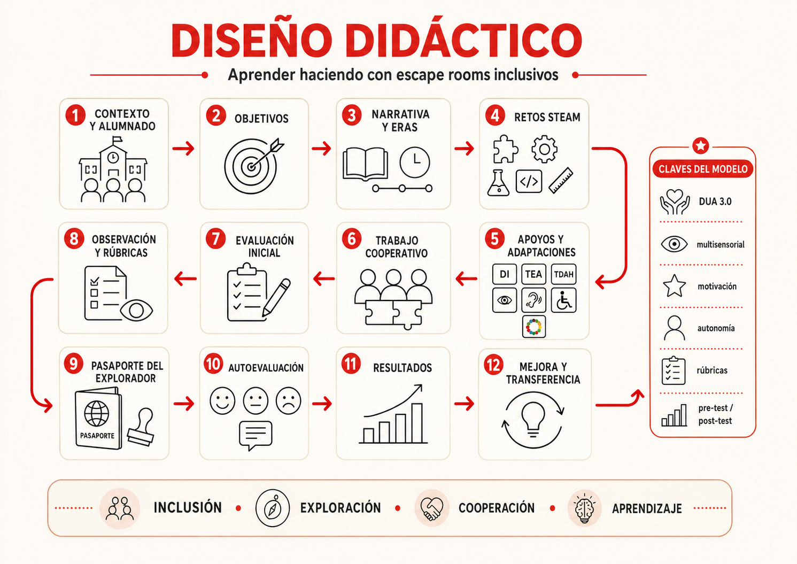
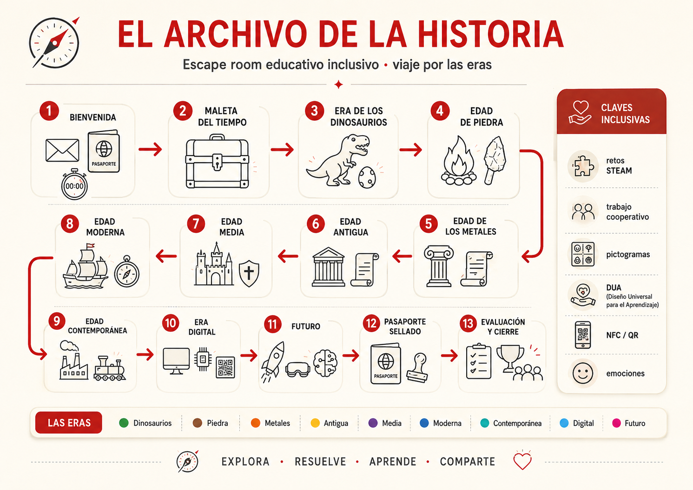
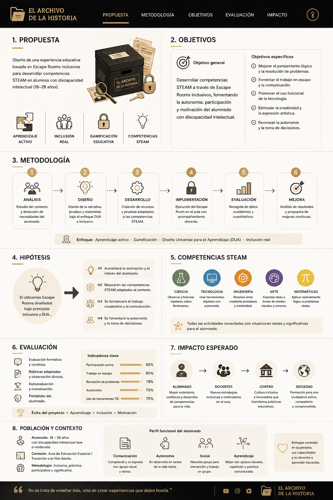

Mostrar la experiencia
Presentar una misión completa con narrativa, materiales, pistas, roles y cierre visible para que el proyecto sea fácil de imaginar.
Sprint 2 · Prototipar para aprender
Segunda entrega del proyecto TFM y tesis doctoral: evolución del Value Proposition Canvas hacia una microexperiencia observable de escape room educativo inclusivo, centrada en comunicar el proyecto, testear hipótesis y decidir mejoras con evidencias.
El Sprint 2 convierte el encaje de valor del Sprint 1 en una versión comunicable y testeable. El foco no está en terminar el escape room completo, sino en comprobar si una misión mínima se entiende, engancha y permite participación real.
Presentar una misión completa con narrativa, materiales, pistas, roles y cierre visible para que el proyecto sea fácil de imaginar.
Detectar qué partes generan bloqueo, qué apoyos funcionan y si el grupo colabora sin dejar a nadie como espectador pasivo.
Transformar el testeo en decisiones concretas sobre dificultad, accesibilidad, ritmo, narrativa y evaluación.
Igual que en la web principal del proyecto, el Sprint 2 incorpora materiales gráficos que ayudan a comunicar la experiencia: identidad de era, progreso visible y cierre de logro.
La entrega combina una simulación web del flujo con materiales físicos de baja fidelidad. Así se puede comunicar la experiencia a docentes y, al mismo tiempo, probar una misión real con alumnado en pequeño grupo.
Esta sección toma como referencia las láminas compartidas: navegación oscura, iconografía line-art, mapas de flujo, tarjetas de prueba, principios DUA y paneles de evaluación. Sirve para explicar el prototipo de forma rápida a docentes, tribunal y usuarios.
Ordena tarjetas por patrón visual y descubre el código.
Respuesta: 4 - 2 - 1 - 3Localiza ciudades y forma una palabra clave.
Apoyo: mapa con relieveUsa pistas de descarte para obtener el código final.
Respuesta: 1 4 2 8Completa la imagen y revela la clave final.
Apoyo: trabajo en equipo





Recorre las cinco fases de la misión. Cada pantalla representa lo que el usuario ve, toca o decide durante la prueba piloto.
El alumnado recibe una carta del Archivo de la Historia. Una pieza temporal se ha desordenado y deben restaurarla para desbloquear el sello de la era.
Se activa la narrativa con una carta breve y un objetivo expresado en una sola acción observable.
El grupo manipula piezas, compara símbolos y ordena una secuencia histórica con apoyos visuales.
Las pistas se ofrecen por niveles para sostener la autonomía sin resolver el reto por el alumnado.
La validación abre un candado simbólico y termina con sello, verbalización y registro emocional.
Lectura fácil, una consigna principal y apoyo visual para reducir carga cognitiva.
Objetos grandes, manipulables y con redundancia de color, forma y símbolo.
Validación clara del reto para cerrar la misión con feedback inmediato.
Registro tangible del logro, útil para memoria emocional y evaluación formativa.
Las hipótesis conectan la propuesta de valor con decisiones observables en el prototipo: claridad, inclusión, reto alcanzable y memoria de logro.
Si la misión se presenta con instrucciones visuales, lenguaje claro y pasos cortos, entonces el alumnado comprenderá qué debe hacer sin depender constantemente del adulto.
Si cada participante tiene un rol útil y visible, entonces aumentará la participación real y se reducirá el riesgo de observadores pasivos.
Si el reto mantiene misterio y ofrece pistas graduadas, entonces la accesibilidad no reducirá la motivación ni convertirá la actividad en demasiado fácil.
Si el avance se valida con un sello en el pasaporte, entonces el alumnado percibirá el logro de forma tangible y recordará mejor su éxito.
El test no busca demostrar que el proyecto ya está terminado. Busca localizar qué funciona, qué confunde y qué debe cambiar antes de escalar la experiencia a más eras.
| Elemento | Decisión de diseño | Qué se mide | Evidencia |
|---|---|---|---|
| Usuarios | Grupo pequeño de alumnado destinatario y observación docente. | Comprensión, autonomía, colaboración y emoción. | Registro de observación y feedback verbal. |
| Duración | 15-20 minutos de experiencia + 5 minutos de cierre. | Ritmo, bloqueos, atención y necesidad de apoyo. | Tiempos, pistas solicitadas y puntos de atasco. |
| Materiales | Carta, piezas, tarjetas visuales, candado simbólico y pasaporte. | Accesibilidad física, visual y cognitiva. | Errores frecuentes, uso espontáneo y comentarios. |
| Evaluación | Rúbrica breve, semáforo emocional y mini entrevista. | Satisfacción, sensación de logro y claridad. | Escala visual, notas del observador y citas clave. |
La prueba piloto se incorpora como insumo de mejora. Los resultados se presentan como aprendizajes cualitativos iniciales, no como validación definitiva.
¿Has entendido la misión? ¿Qué parte te ha gustado más? ¿En qué momento has necesitado ayuda? ¿Te has sentido importante dentro del equipo? ¿Quieres jugar otra era?
Separar la entrada narrativa de las instrucciones del reto y reforzar los pasos con pictogramas o tarjetas de acción.
Convertir cada rol en una acción física visible para evitar participación desigual dentro del grupo.
Graduar mejor la ayuda para que oriente sin resolver, especialmente cuando aparece bloqueo prolongado.
Cuando la misión funcione con estabilidad, replicar el patrón en Prehistoria, Edad Antigua, Media, Moderna, Contemporánea, Digital y Futuro.
El Sprint 2 convierte El Archivo de la Historia en un prototipo observable, comunicable y mejorable. La hipótesis central es que un escape room diseñado desde la accesibilidad puede mantener el desafío, favorecer participación real y generar aprendizaje significativo. El testeo permite reducir incertidumbre antes de invertir en una versión completa.